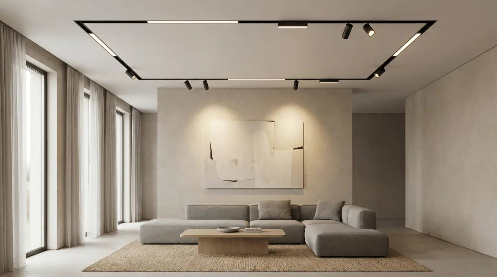
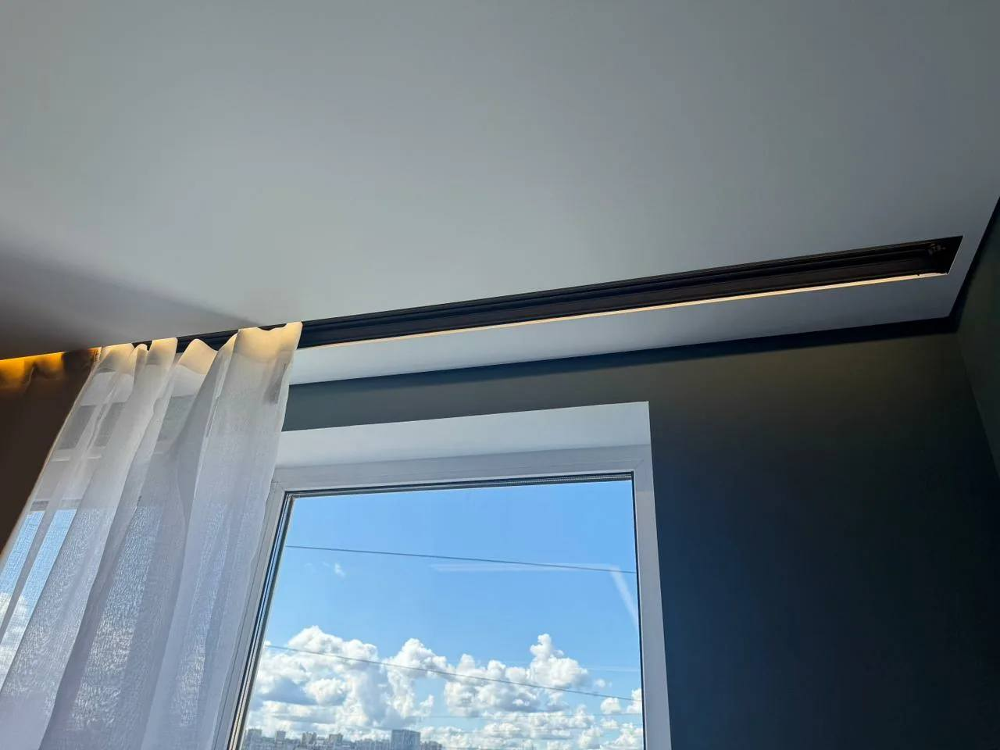

Потолок и свет, продуманные вместе с интерьером
Подберём систему под ваше помещение, согласуем смету до монтажа и аккуратно выполним работы.
Бесплатный замер — в Калининграде. Работаем также по Калининградской области.

- С 2009 года работаем с потолками и светом
- 10 000+ выполненных объектов
- 500 000+ м² смонтированных потолков
Решения для потолка и света
От аккуратного примыкания до интегрированного освещения — подберём систему под помещение и ваш интерьер.
 Теневые и парящие потолки
Выразительный контур или мягкий световой эффект — подберём вариант под помещение.
Теневые и парящие потолки
Выразительный контур или мягкий световой эффект — подберём вариант под помещение.
 Световые линии
Интегрируем свет в геометрию комнаты и общую композицию.
Световые линии
Интегрируем свет в геометрию комнаты и общую композицию.
 Магнитные треки
Продумываем расположение треков и светильников под помещение.
Магнитные треки
Продумываем расположение треков и светильников под помещение.
 Тканевые потолки BAUF
Сдержанная фактура и цельный вид потолка — подберём решение под интерьер.
Тканевые потолки BAUF
Сдержанная фактура и цельный вид потолка — подберём решение под интерьер.

Скрытые карнизы Предусмотрим нишу и карниз до монтажа, чтобы сохранить чистую линию у окна.